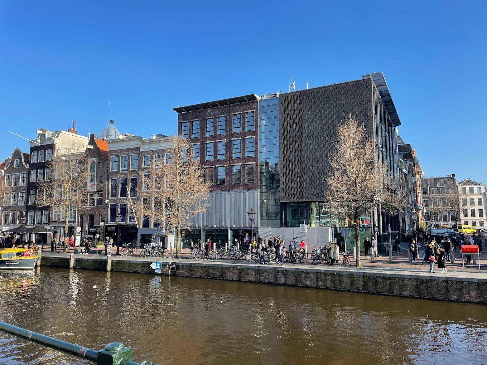

2. アンネフランクの家

第2次世界大戦中の1942年から2年間アンネフランクはドイツのユダヤ人迫害から逃げるために、家族やほかのユダヤ人たちと息をひそめて一つの家で暮らしていました。アンネは、隠し家の中で過ごした生活や平和の思いをつづった日記は「アンネの日記」として、世界的ベストセラーになっています。そんな隠れ家のような家が今もオランダのアムステルダムにあり、それが今回紹介する「アンネフランクの家」です。3階と4階の屋根裏部屋を改造しており、隠し扉のようになっている本棚まで存在します。アンネが生きた建物の中に入り、その雰囲気を味わうことができます。
現地へ行くと特に混雑していることが多く、チケット売り場で1時間待ちのこともしばしばあるようです。オンラインでチケットを購入できますので、公式ホームページでの事前購入が安心です。
| 名前 | anne frank house |
|---|---|
| 住所 | Westermarkt 20, 1016 GV Amsterdam, オランダ |
| 営業時間 | 9:00～22:00 |
| 料金 | 大人:€16.00/10～17歳:€7.00/0～9歳:€1.00 |
| 公式サイト | アンネフランクの家 |